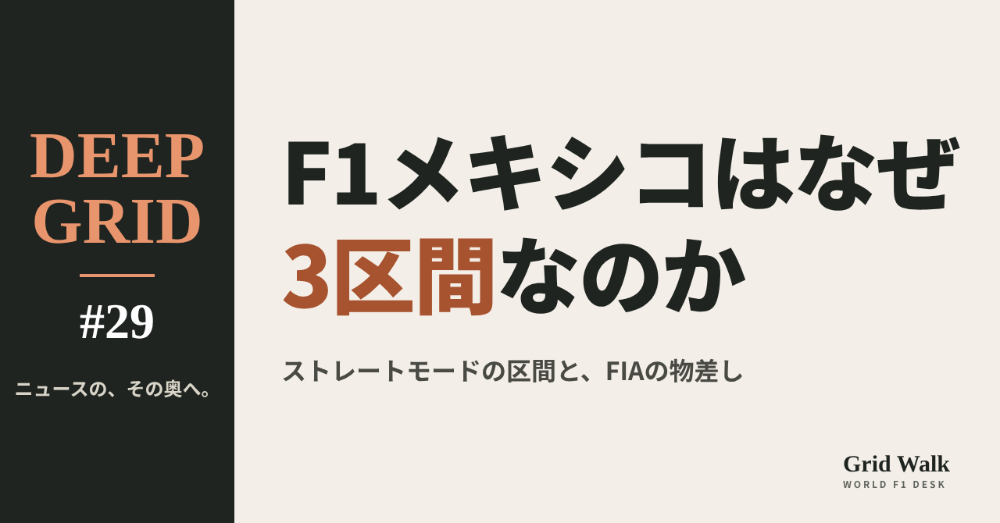
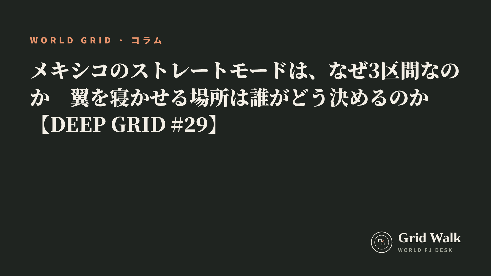
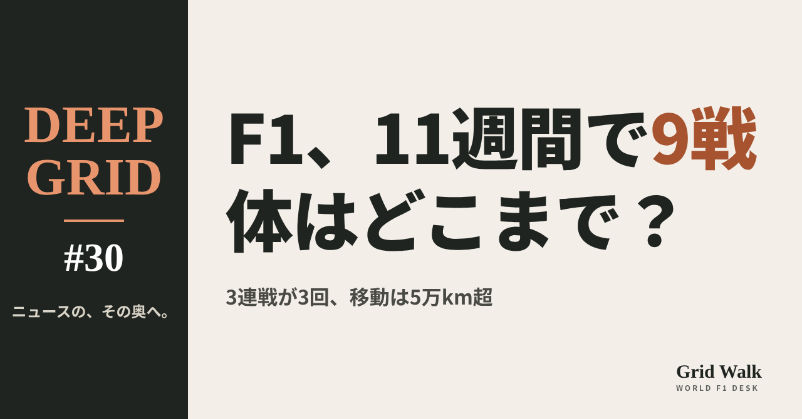
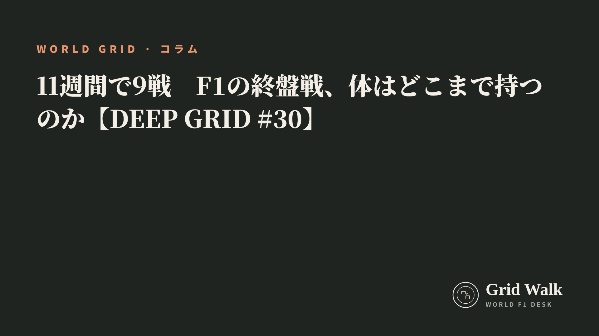

<meta charset="utf-8"><title>DEEP GRID #29・#30 note貼り付け</title>
<style>
/* one column of numbered paste steps; text steps vs image steps differ by marker */
:root{--bg:#F5F4F0;--card:#FFFFFF;--ink:#1D2321;--mute:#5F665F;--line:#DCDAD2;--btn:#1F5FBF;--btnok:#2E8B4F;--img:#E9F3EC;--imgink:#22663B;--sans:'IBM Plex Sans JP','Hiragino Sans','Noto Sans JP',sans-serif}
@media (prefers-color-scheme:dark){:root:not([data-theme="light"]){--bg:#171A19;--card:#202423;--ink:#ECEDE8;--mute:#A3AAA2;--line:#343937;--btn:#4D8BE6;--btnok:#3FA866;--img:#1E2C23;--imgink:#8FD3A6;color-scheme:dark}}
:root[data-theme="dark"]{--bg:#171A19;--card:#202423;--ink:#ECEDE8;--mute:#A3AAA2;--line:#343937;--btn:#4D8BE6;--btnok:#3FA866;--img:#1E2C23;--imgink:#8FD3A6;color-scheme:dark}
body{background:var(--bg);color:var(--ink);font-family:var(--sans);font-size:15px;line-height:1.75;padding:20px 16px 60px}
main{max-width:680px;margin:0 auto;display:grid;gap:28px}
header h1{font-size:22px;margin:0 0 6px;text-wrap:balance}
header p{margin:0;color:var(--mute);font-size:14px}
nav{display:flex;gap:8px;flex-wrap:wrap;margin-top:12px}
nav a{border:1px solid var(--line);border-radius:999px;padding:4px 14px;color:var(--ink);text-decoration:none;font-size:14px;background:var(--card)}
.part h2{font-size:18px;line-height:1.5;margin:0 0 12px;text-wrap:balance;display:flex;gap:10px;align-items:baseline;flex-wrap:wrap}
.tag{font-size:13px;background:var(--ink);color:var(--bg);border-radius:6px;padding:1px 9px}
.steps{list-style:none;margin:0;padding:0;display:grid;gap:12px}
.st{background:var(--card);border:1px solid var(--line);border-radius:12px;padding:12px;min-width:0}
.hd{display:flex;align-items:center;gap:8px;margin-bottom:8px}
.no{width:26px;height:26px;border-radius:50%;background:var(--btn);color:#fff;display:inline-flex;align-items:center;justify-content:center;font-size:13px;font-weight:700;flex:0 0 26px}
.im .no{background:var(--btnok)}
.hd em{font-style:normal;font-size:12px;background:var(--img);color:var(--imgink);border-radius:6px;padding:0 8px}
.bx{font-size:13.5px;line-height:1.7;border:1px solid var(--line);border-radius:8px;padding:8px 10px;max-height:110px;overflow:auto;overflow-wrap:anywhere}
.bx.tall{max-height:150px}.bx p{margin:0 0 6px}.bx h2{font-size:14px;margin:8px 0 4px}.bx a{color:var(--btn)}
.st img{display:block;width:100%;max-width:100%;border:1px solid var(--line);border-radius:8px}
.sub{font-size:12.5px;color:var(--mute);margin:6px 0 0}
.cp{width:100%;margin-top:8px;padding:12px;border:0;border-radius:10px;background:var(--btn);color:#fff;font:600 15px var(--sans);cursor:pointer}
.cp.ok{background:var(--btnok)}.cp.dl{background:var(--btnok)}.cp:focus-visible{outline:3px solid var(--ink);outline-offset:2px}
.xh{font-size:15px;margin:20px 0 10px}
.fb{font-size:13px;line-height:1.7;margin:8px 0 0;padding:8px 10px;border-radius:8px;background:var(--img);color:var(--imgink)}
.opts{display:grid;grid-template-columns:repeat(auto-fill,minmax(240px,1fr));gap:10px}
.opt{min-width:0}.opt img{display:block;width:100%;border:1px solid var(--line);border-radius:8px}
.ol{display:flex;align-items:center;gap:8px;margin-top:6px}.ol b{font-size:13px;flex:0 0 auto}.ol .on{font-size:12.5px;color:var(--mute);flex:1;min-width:0}.ol .cp{width:auto;flex:0 0 auto;padding:9px 14px}.ol .cp{margin:0;padding:9px}
.toast{font-size:13px;color:var(--mute);margin-top:6px}
</style>
<main><header><h1>DEEP GRID #29・#30 note貼り付け</h1><p>2本あります。青い番号は文章、緑は画像です。</p><nav><a href="#p1">#29</a><a href="#p2">#30</a></nav></header><section class="part" id="p1"><h2><span class="tag">DEEP GRID #29</span>メキシコのストレートモードは、なぜ3区間なのか　翼を寝かせる場所は誰がどう決めるのか【DEEP GRID #29】</h2><ol class="steps">
<li class="st im"><div class="hd"><span class="no">1</span><b>見出し画像</b><em>画像</em></div><button class="cp dl" data-img="img/straight-mode-zones.png" data-name="deep-straight-mode-zones_見出し画像.png">ダウンロード</button></li>
<li class="st"><div class="hd"><span class="no">2</span><b>タイトル</b></div><div class="bx" id="p1t">メキシコのストレートモードは、なぜ3区間なのか　翼を寝かせる場所は誰がどう決めるのか【DEEP GRID #29】</div><button class="cp" data-plain="p1t">タイトルをコピー</button></li>
<li class="st"><div class="hd"><span class="no">3</span><b>本文</b></div><div class="bx tall" id="p1r"><p>2026年のF1では、翼を寝かせて空気抵抗を減らすストレートモードを、コースのどこでも使えるわけではない。使える区間を決めるのはFIAで、その数はモナコの0からオーストラリアなどの5まで大きく違う。今週末のメキシコシティGPは3区間。区間を選ぶ物差しと、薄い空気との関係、よく似た名前のオーバーテイクモードとの違いを読む。</p><p>データの表と、出典33件はサイトで → <a href="https://f1gridwalk.github.io/deep/straight-mode-zones/?utm_source=note&amp;utm_campaign=straight-mode-zones">https://f1gridwalk.github.io/deep/straight-mode-zones/?utm_source=note&amp;utm_campaign=straight-mode-zones</a></p><h2>先に結論</h2><p>① ストレートモードは、FIAが大会ごとに決めた「作動ゾーン」の中でしか使えない。メキシコシティGPは3区間で、メインストレート、3〜4コーナーの間、11〜12コーナーの間に置かれた（PlanetF1、ScuderiaFans）。</p><p>② 区間を描いた地図は、FIAのF1レースディレクターが全チームに出す文書に載る。英The Raceによると、物差しは、タイヤのグリップの限界で走っていない場所であることと、1つの区間が3秒より長く続くこと。燃料の軽い予選でも、タイヤがすり減った終盤でも安全であることも求められる。</p><p>③ 区間の数はコースで0〜5と大きく違う。オーストラリア、ベルギー、シンガポールが5、モナコは0だった（FIAの地図）。開幕戦では、FIAが安全を理由に1区間を外すと発表し、約1時間後に取り消した。</p><p>④ メキシコの3区間は、2025年まで使われたDRSの3区間（3つ目は2019年に追加）と同じ3本の直線にある。空気が薄いここでは、翼が生む空気抵抗がもともと小さい。ウィリアムズは2024年、メキシコではDRSの効きがほかのコースより小さいと説明していた。</p><p>⑤ 名前の似たオーバーテイクモードは別の仕組みだ。前の車の1秒以内を走る車だけに許される電気の上乗せで、メキシコでは15コーナーで差を測り、17コーナーから使えるようになる（PlanetF1）。</p><p><strong>あなたは、ストレートモードの区間はもっと増やすべきだと思いますか？</strong></p><h2>続きは F1 Grid Walk で</h2><p>ここから先の「「翼を寝かせてよい場所」は、規則で囲われている」「FIAの物差し：グリップの限界、3秒、曲がり具合」「0区間のモナコ、取り消されたメルボルン」「メキシコの3区間は、DRSの時代と同じ3本の直線」「オーバーテイクモードは「場所」ではなく「差」で決まる」は、サイトで読めます。2026年の大会ごとのストレートモードの区間の数、FIAが区間を決めるときの物差し、メキシコの3区間と、DRSの時代、規則と文書の中のストレートモード、ストレートモードとオーバーテイクモードの違いの表も載せています。</p><p><strong>DEEP GRID #29「メキシコのストレートモードは、なぜ3区間なのか　翼を寝かせる場所は誰がどう決めるのか」</strong></p><p><a href="https://f1gridwalk.github.io/deep/straight-mode-zones/">https://f1gridwalk.github.io/deep/straight-mode-zones/</a></p><p>━━━━━━━━━━</p><p><strong>F1 Grid Walk では、世界のF1ニュースを毎日日本語でまとめています。</strong></p><p>海外の記事の要約を、毎日載せています。</p><p>ほかの海外記事も読みたい方は、F1 Grid Walkへ。</p><p><a href="https://f1gridwalk.github.io/">https://f1gridwalk.github.io/</a></p><p>━━━━━━━━━━</p><p><a href="https://www.planetf1.com/news/fia-mexican-grand-prix-2026-active-aero">出典：PlanetF1</a></p><p><a href="https://www.planetf1.com/news/fia-united-states-grand-prix-2026-active-aero">出典：PlanetF1</a></p><p><a href="https://scuderiafans.com/how-mexico-citys-three-straight-mode-zones-could-affect-ferrari-mercedes-and-red-bull/">出典：ScuderiaFans</a></p><p><a href="https://www.grandprix247.com/formula-1-news/some-technical-insights-ahead-of-the-2026-mexico-city-grand-prix-at-autodromo-hermanos-rodriguez">出典：GRANDPRIX247</a></p><p><a href="https://williamsf1.com/posts/ffcf0d74-0d2c-4b62-9dde-1c7a0e291a91/how-altitude-affects-an-f1-car">出典：ウィリアムズ</a></p><p><a href="https://www.crash.net/f1/news/931873/1/third-drs-zone-added-mexican-gp">出典：Crash.net</a></p><p><a href="https://www.fia.com/system/files/decision-document/2026_canadian_grand_prix_-_competition_notes_-_circuit_map_v2.pdf">出典：FIA</a></p><p><a href="https://www.fia.com/system/files/decision-document/2026_australian_grand_prix_-_competition_notes_-_circuit_map_pit_lane_drawing_emergency_exits_map_and_quarantine_zone.pdf">出典：FIA</a></p><p><a href="https://www.fia.com/system/files/decision-document/2026_australian_grand_prix_-_race_directors_competition_notes.pdf">出典：FIA</a></p><p><a href="https://www.fia.com/system/files/decision-document/2026_japanese_grand_prix_-_race_directors_competition_notes_v2.pdf">出典：FIA</a></p><p><a href="https://www.fia.com/system/files/decision-document/2026_miami_grand_prix_-_competition_notes_-_circuit_map_pit_lane_drawing_emergency_exits_map_and_red_zone.pdf">出典：FIA</a></p><p><a href="https://www.fia.com/system/files/decision-document/2026_monaco_grand_prix_-_competition_notes_-_circuit_map_pit_lane_drawing_emergency_exits_map_and_red_zone.pdf">出典：FIA</a></p><p><a href="https://gp.news/media/documents/2026/British_Grand_Prix/d06_Competition_Notes_-_Circuit_Map_Pit_Lane_Drawing_Emergency_Exits_Map_and_Red_Zone/document.pdf">出典：FIA（gp.news掲載の写し）</a></p><p><a href="https://www.fia.com/system/files/decision-document/2026_belgian_grand_prix_-_competition_notes_-_circuit_map_pit_lane_drawing_emergency_exits_map_and_red_zone.pdf">出典：FIA</a></p><p><a href="https://www.fia.com/system/files/decision-document/2026_hungarian_grand_prix_-_competition_notes_-_circuit_map_pit_lane_drawing_emergency_exits_map_and_red_zone.pdf">出典：FIA</a></p><p><a href="https://www.fia.com/system/files/decision-document/2026_bahrain_grand_prix_in_malaysia_-_competition_notes_-_circuit_map_pit_lane_drawing_emergency_exits_map_and_red_zone.pdf">出典：FIA</a></p><p><a href="https://www.fia.com/system/files/decision-document/2026_singapore_grand_prix_-_competition_notes_-_circuit_map_pit_lane_drawing_and_emergency_exits_map.pdf">出典：FIA</a></p><p><a href="https://www.fia.com/system/files/decision-document/2025_mexico_city_grand_prix_-_event_notes_-_circuit_map_pit_lane_drawing_emergency_exits_map_and_quarantine_zone_area.pdf">出典：FIA</a></p><p><a href="https://api.fia.com/system/files/documents/fia_2026_f1_regulations_-_section_c_technical_-_iss_17_-_2026-04-28.pdf">出典：FIA</a></p><p><a href="https://the-race.com/formula-1/why-f1-cars-wont-run-active-aero-in-monaco/">出典：The Race</a></p><p><a href="https://www.crash.net/f1/news/1096301/1/explained-why-f1-has-removed-active-aero-monaco-grand-prix">出典：Crash.net</a></p><p><a href="https://speedcafe.com/f1-news-2026-monaco-grand-prix-acrive-aero-update-track-map-new-rule-dropped-regulations-overtaking">出典：Speedcafe</a></p><p><a href="https://www.grandprix247.com/formula-1-news/active-aero-switched-off-for-2026-formula-1-monaco-grand-prix-as-fia-prioritizes-safety">出典：GRANDPRIX247</a></p><p><a href="https://www.gpfans.com/en/f1-news/1077976/fia-f1-2026-rule-change-australian-grand-prix-u-turn-straight-mode/">出典：GPFans</a></p><p><a href="https://www.motorsport.com/f1/news/fia-to-revert-australian-gp-straight-mode-change-after-f1-team-pushback/10802784/">出典：Motorsport.com</a></p><p><a href="https://www.autosport.com/f1/news/fia-to-revert-australian-gp-straight-mode-change-after-f1-team-pushback/10802800/">出典：Autosport</a></p><p><a href="https://www.crash.net/f1/news/1091079/1/active-aero-latest-2026-f1-car-rule-be-panned-its-really-dangerous">出典：Crash.net</a></p><p><a href="https://www.gpfans.com/en/f1-news/1077827/f1-2026-australian-grand-prix-fia-start-procedure-change/">出典：GPFans</a></p><p><a href="https://www.the-race.com/formula-1/f1-teams-agree-another-change-to-tackle-2026-start-safety-fears">出典：The Race</a></p><p><a href="https://www.f1technical.net/news/28910">出典：F1Technical</a></p><p><a href="https://www.formula1.com/en/latest/article/explained-2026-aerodynamic-regulations-fia-x-mode-z-mode-.26c1CtOzCmN3GfLMywrgb2">出典：F1公式サイト</a></p><p><a href="https://www.motorsportmagazine.com/articles/single-seaters/f1/explained-the-new-mode-names-for-active-aero-and-energy-boost-for-f1-2026/">出典：Motorsport Magazine</a></p><p><a href="https://www.crash.net/f1/news/1088255/1/explained-f1s-new-simplified-2026-terminology-after-confusion-fears">出典：Crash.net</a></p></div><button class="cp" data-rich="p1r">本文をコピー</button></li>
<li class="st"><div class="hd"><span class="no">4</span><b>ハッシュタグ</b></div><div class="bx" id="p1h">#F1 #F1jp #DEEPGRID #F1解説 #メキシコGP #アクティブエアロ</div><button class="cp" data-plain="p1h">タグをコピー</button></li>
</ol><h3 class="xh">X</h3><ol class="steps">
<li class="st im"><div class="hd"><b>X用の画像</b><em>画像</em></div><button class="cp dl" data-img="img/x_straight-mode-zones.png" data-name="x_deep-straight-mode-zones.png">ダウンロード</button></li>
<li class="st"><div class="hd"><b>① noteをシェアするときの文</b></div><div class="bx" id="p1x0">メキシコのストレートモードは3区間、モナコは0。2026年の翼を寝かせる区間は、FIAがどんな物差しで決めているのか。DEEP GRIDで深掘りしました #F1jp #DEEPGRID</div><button class="cp" data-plain="p1x0">コピー</button></li>
<li class="st"><div class="hd"><b>② ①への返信</b></div><div class="bx" id="p1x1">ほかの海外記事も読みたい方は、F1 Grid Walkへ。
https://f1gridwalk.github.io/deep/straight-mode-zones/?utm_source=x&amp;utm_campaign=straight-mode-zones</div><button class="cp" data-plain="p1x1">コピー</button></li>
<li class="st"><div class="hd"><b>③ ②への返信</b></div><div class="bx" id="p1x2">毎日の海外F1ニュースは、日本語でこちらにまとめています。
https://f1gridwalk.github.io/</div><button class="cp" data-plain="p1x2">コピー</button></li>
</ol></section><section class="part" id="p2"><h2><span class="tag">DEEP GRID #30</span>11週間で9戦　F1の終盤戦、体はどこまで持つのか【DEEP GRID #30】</h2><ol class="steps">
<li class="st im"><div class="hd"><span class="no">1</span><b>見出し画像</b><em>画像</em></div><button class="cp dl" data-img="img/season-end-nine-races.png" data-name="deep-season-end-nine-races_見出し画像.png">ダウンロード</button></li>
<li class="st"><div class="hd"><span class="no">2</span><b>タイトル</b></div><div class="bx" id="p2t">11週間で9戦　F1の終盤戦、体はどこまで持つのか【DEEP GRID #30】</div><button class="cp" data-plain="p2t">タイトルをコピー</button></li>
<li class="st"><div class="hd"><span class="no">3</span><b>本文</b></div><div class="bx tall" id="p2r"><p>9月26日のバクーから12月6日のアブダビまで、F1は11の週末に9戦を詰めこんだ。3連戦が3回続き、移動は直線で5万km を超え、時差は最大で13時間。パドックの医師は、いまの日程を「扱える限界の、限界の、限界」と話す。日程、時差、体への負担、そして決まりの側の歯止めを、出典つきで整理する。</p><p>データの表と、出典36件はサイトで → <a href="https://f1gridwalk.github.io/deep/season-end-nine-races/?utm_source=note&amp;utm_campaign=season-end-nine-races">https://f1gridwalk.github.io/deep/season-end-nine-races/?utm_source=note&amp;utm_campaign=season-end-nine-races</a></p><h2>先に結論</h2><p>① 2026年の終盤は、9月26日のバクー（第15戦）から12月6日のアブダビ（第23戦）まで、11の週末に9戦が入る。3週続けてレースがある3連戦（トリプルヘッダー）が3回だ。もとの日程では10月2〜4日の週末は空いていたが、バーレーンGPをマレーシアのセパンで開くことになり、そこが埋まった（GPFans）。</p><p>② 9つの開催地を順につなぐと、直線距離だけで約5万4500km になる（編集部の計算）。時差が大きいのは、シンガポールからオースティンへの13時間と、ラスベガスからカタールへの11時間。米CDCの目安では、体内時計が東向きの移動に慣れるのは1日に約1時間。ラスベガスの決勝から次のカタールの週末までは6日しかない。</p><p>③ 体への負担について、パドックの医師エリナ・ハウキプロはPlanetF1に「けがが増える。体調を崩す人も増える」と話し、今の日程を「扱える限界の、限界の、限界」と表した。PlanetF1は、ドライバーは1レースで3〜5リットルの水分を失うと書いている。</p><p>④ いちばん重いのは裏方だという声が多い。ウィリアムズのサインツは、家にいられるのが3日か4日だけになるチームのスタッフのことを気にかけた。チームと仕事をするダン・マーティン医師は、ふつうの1日は12〜14時間で、3週目にはけがの危険が増すと話している（Autosport、2024年）。</p><p>⑤ 決まりの側の歯止めは、年間のレース数の上限（コンコルド協定で最大24戦とPlanetF1）と、夏の14日間と12月の9日間の工場閉鎖（FIAの運営規則）だ。3連戦の数そのものは、チーム代表たちが、なしから1回だけへ、そして今の3回へと受け入れてきた、と元チーム代表のサフナウアーは振り返る（GPFans）。チームやFIAは、人を入れ替える交代制で負担を分けている。</p><p><strong>あなたは、F1の年間レース数はもっと減らすべきだと思いますか？</strong></p><h2>続きは F1 Grid Walk で</h2><p>ここから先の「11の週末に9戦は、どう組まれたか」「移動は5万km、時差は最大13時間」「体に起きること：暑さ、水分、病気、高地」「いちばん重いのは裏方：睡眠と家」「決まりの側の歯止めと、その限界」は、サイトで読めます。終盤9戦の日程・移動・時差、体内時計が追いつくのにかかる日数（目安）、数の上限と休みの決まり、2026年の3連戦の表も載せています。</p><p><strong>DEEP GRID #30「11週間で9戦　F1の終盤戦、体はどこまで持つのか」</strong></p><p><a href="https://f1gridwalk.github.io/deep/season-end-nine-races/">https://f1gridwalk.github.io/deep/season-end-nine-races/</a></p><p>━━━━━━━━━━</p><p><strong>F1 Grid Walk では、世界のF1ニュースを毎日日本語でまとめています。</strong></p><p>海外の記事の要約を、毎日載せています。</p><p>ほかの海外記事も読みたい方は、F1 Grid Walkへ。</p><p><a href="https://f1gridwalk.github.io/">https://f1gridwalk.github.io/</a></p><p>━━━━━━━━━━</p><p><a href="https://www.planetf1.com/news/f1-2026-calendar-hidden-toll-nine-races-11-weeks">出典：PlanetF1</a></p><p><a href="https://www.planetf1.com/news/carlos-sainz-f1-2026-triple-headers">出典：PlanetF1</a></p><p><a href="https://www.planetf1.com/news/kimi-antonelli-illness-mercedes-mexico-gp-media-day-absence">出典：PlanetF1</a></p><p><a href="https://www.planetf1.com/news/valtteri-bottas-mexico-city-gp-illness">出典：PlanetF1</a></p><p><a href="https://www.formula1.com/en/racing/2026">出典：F1公式</a></p><p><a href="https://www.formula1.com/en/latest/article/official-grand-prix-start-times-for-2026-f1-season-confirmed.2UgPfArqH76tzlOYh21jSG">出典：F1公式</a></p><p><a href="https://www.formula1.com/en/latest/article/formula-1-reveals-calendar-for-2026-season.YctbMZWqBvrgyddrnauo8">出典：F1公式</a></p><p><a href="https://www.formula1.com/en/racing/2026/mexico">出典：F1公式</a></p><p><a href="https://www.formula1.com/en/racing/2026/brazil">出典：F1公式</a></p><p><a href="https://www.formula1.com/en/racing/2026/las-vegas">出典：F1公式</a></p><p><a href="https://www.formula1.com/en/racing/2026/qatar">出典：F1公式</a></p><p><a href="https://www.formula1.com/en/racing/2026/united-arab-emirates">出典：F1公式</a></p><p><a href="https://www.gpfans.com/en/f1-news/1088727/fia-announce-update-to-f1-race-start-times-for-rest-of-2026-season/">出典：GPFans</a></p><p><a href="https://www.gpfans.com/en/f1-news/1089833/working-in-f1-brutal-reality-2026-calendar-jake-humphrey/">出典：GPFans</a></p><p><a href="https://cdc.gov/yellow-book/hcp/travel-air-sea/jet-lag-disorder.html">出典：CDC（米疾病対策センター）</a></p><p><a href="https://www.autosport.com/f1/news/the-health-risks-associated-with-f1s-triple-headers/10625045/">出典：Autosport</a></p><p><a href="https://www.autosport.com/f1/news/can-f1-make-triple-headers-sustainable/10663432/">出典：Autosport</a></p><p><a href="https://www.autosport.com/f1/news/how-f1-teams-manage-the-punishing-reality-of-f1s-relentless-schedule/10477711/">出典：Autosport</a></p><p><a href="https://redbullracing.com/int-en/bulls-guide-to-altitude">出典：Red Bull Racing</a></p><p><a href="https://api.fia.com/system/files/documents/fia_2026_f1_regulations_-_section_f_operational_-_iss_09_-_2026-06-25.pdf">出典：FIA</a></p><p><a href="https://www.crash.net/f1/news/1090681/1/why-f1s-curfew-rules-have-been-scrapped-australian-gp">出典：Crash.net</a></p><p><a href="https://www.crash.net/f1/news/1107917/1/fia-boss-insists-qatar-and-abu-dhabi-f1-races-are-going-happen">出典：Crash.net</a></p><p><a href="https://www.pitdebrief.com/?p=30260">出典：Pit Debrief</a></p><p><a href="https://www.pitdebrief.com/?p=5877">出典：Pit Debrief</a></p><p><a href="https://www.grandprix.com/news/f1-ceo-plays-down-talk-of-25-race-calendars.html">出典：Grandprix.com</a></p><p><a href="https://timeanddate.com/news/time/mexico-abolishes-dst-2022.html">出典：timeanddate.com</a></p><p><a href="https://www.timeanddate.com/time/zone/mexico">出典：timeanddate.com</a></p><p><a href="https://timeanddate.com/time/zone/brazil/sao-paulo-state">出典：timeanddate.com</a></p><p><a href="https://www.timeanddate.com/time/zone/qatar">出典：timeanddate.com</a></p><p><a href="https://timeanddate.com/time/zone/united-arab-emirates">出典：timeanddate.com</a></p><p><a href="https://www.timeanddate.com/time/zone/malaysia/kuala-lumpur">出典：timeanddate.com</a></p><p><a href="https://www.worldometers.info/time/baki-azerbaijan/">出典：worldometers</a></p><p><a href="https://www.worldometers.info/time/las-vegas-nv-usa/">出典：worldometers</a></p><p><a href="https://24timezones.com/Austin/time-zone">出典：24timezones</a></p><p><a href="https://24timezones.com/difference/austin/singapore">出典：24timezones</a></p><p><a href="https://www.fox29.com/news/when-daylight-saving-time-ends-2026-date-clocks-fall-back-one-hour">出典：FOX29</a></p></div><button class="cp" data-rich="p2r">本文をコピー</button></li>
<li class="st"><div class="hd"><span class="no">4</span><b>ハッシュタグ</b></div><div class="bx" id="p2h">#F1 #F1jp #DEEPGRID #F1解説 #F1カレンダー #3連戦</div><button class="cp" data-plain="p2h">タグをコピー</button></li>
</ol><h3 class="xh">X</h3><ol class="steps">
<li class="st im"><div class="hd"><b>X用の画像</b><em>画像</em></div><button class="cp dl" data-img="img/x_season-end-nine-races.png" data-name="x_deep-season-end-nine-races.png">ダウンロード</button></li>
<li class="st"><div class="hd"><b>① noteをシェアするときの文</b></div><div class="bx" id="p2x0">F1の終盤戦は11週間で9戦、3連戦が3回。帯同医は「限界の、限界の、限界」と語ります。移動、時差、暑さ、裏方の負担まで、DEEP GRIDで深掘りしました #F1jp #DEEPGRID</div><button class="cp" data-plain="p2x0">コピー</button></li>
<li class="st"><div class="hd"><b>② ①への返信</b></div><div class="bx" id="p2x1">ほかの海外記事も読みたい方は、F1 Grid Walkへ。
https://f1gridwalk.github.io/deep/season-end-nine-races/?utm_source=x&amp;utm_campaign=season-end-nine-races</div><button class="cp" data-plain="p2x1">コピー</button></li>
<li class="st"><div class="hd"><b>③ ②への返信</b></div><div class="bx" id="p2x2">毎日の海外F1ニュースは、日本語でこちらにまとめています。
https://f1gridwalk.github.io/</div><button class="cp" data-plain="p2x2">コピー</button></li>
</ol></section></main><script>
function done(b,msg){const t=b.dataset.t||b.textContent;b.dataset.t=t;b.classList.add('ok');b.textContent=msg||'コピーしました';setTimeout(()=>{b.classList.remove('ok');b.textContent=t},2000)}
function selectEl(el){const r=document.createRange();r.selectNodeContents(el);const s=getSelection();s.removeAllRanges();s.addRange(r)}
async function rich(el,b){
  try{await navigator.clipboard.write([new ClipboardItem({'text/html':new Blob([el.innerHTML],{type:'text/html'}),'text/plain':new Blob([el.innerText],{type:'text/plain'})})]);done(b);return}catch(e){}
  selectEl(el);let ok=false;try{ok=document.execCommand('copy')}catch(e){}
  if(ok){getSelection().removeAllRanges();done(b)}else{done(b,'選択しました。コピーしてください')}}
async function plain(el,b){
  try{await navigator.clipboard.writeText(el.innerText);done(b);return}catch(e){}
  selectEl(el);let ok=false;try{ok=document.execCommand('copy')}catch(e){}
  if(ok){getSelection().removeAllRanges();done(b)}else{done(b,'選択しました。コピーしてください')}}
let dlns=null;(async()=>{try{dlns=await window.claude?.use?.("downloads")}catch(e){dlns=null}})();
async function img(src,b){
  b.dataset.t=b.dataset.t||b.textContent;
  if(!dlns){try{dlns=await window.claude?.use?.("downloads")}catch(e){}}
  if(!dlns){b.textContent='ダウンロードできませんでした';setTimeout(()=>{b.textContent=b.dataset.t},3500);return}
  try{const blob=await fetch(src).then(r=>r.blob());b.textContent='保存の確認を開いています…';
    await dlns.save({filename:b.dataset.name,data:blob});done(b,'ダウンロードしました')}
  catch(e){const c=e&&e.code;b.textContent=c==='declined'?'キャンセルしました':c==='rate_limited'?'少し待ってからもう一度押してください':'ダウンロードできませんでした';setTimeout(()=>{b.textContent=b.dataset.t},3500)}}
document.querySelectorAll('.cp').forEach(b=>b.addEventListener('click',()=>{
  if(b.dataset.rich)rich(document.getElementById(b.dataset.rich),b);
  else if(b.dataset.plain)plain(document.getElementById(b.dataset.plain),b);
  else img(b.dataset.img,b)}));
</script>